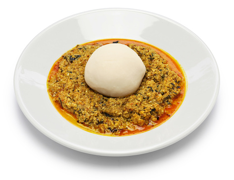

Pounded-yam

Description
Pounded yam in a simple definition is simply boiled white yam that has
undergone the process of pounding. There are other simple ways to achieve
this recipe, people have been able to synthesis the process and taken away
the “pounding”. They have been able to produce yam flour that takes about
ten minutes of stirring overheat to produce pounded yam.
Ingredients
- Tubers of yam
- Mortar
- Pestle
- Cooking pot
- Water
- A kitchen Knife
Steps
-
Go ahead and peel off the brown outer layer of the yam, slice and wash
the white part with lots of clean water.
-
Transfer into a cooking pot and start cooking with just water. Be sure
that the sliced yams are almost completely submerged in water.
-
Cook for ten to fifteen minutes then check to see if the yams are soft
enough for pounding, you can check with a kitchen fork by piercing. Once
the yams are soft enough for pounding you are ready for the pounding
part. Be sure that the water is not completely dried because you will
need it while pounding the yam.
-
Sometimes the yam gets very strong during pounding that you will need to
add a little water while pounding, you can use ordinary water but the
water left after cooking the yam is most suitable.
-
Pick with a fork and transfer into a mortar then go ahead and pound with
a pestle, pound until the yam is seedless and can easily be molded, you
can add water and pound until you have a smooth soft pounded yam.
-
You need to know that the yam used for the preparation of pounded yam
must have stayed for at least three months on the surface, we don’t use
newly harvested yams for the preparation of pounded.
-
Pounded yam in Nigeria is not served as a course meal but paired with a
plate of Nigerian soups, it goes best with egusi or bitter leaf soup.